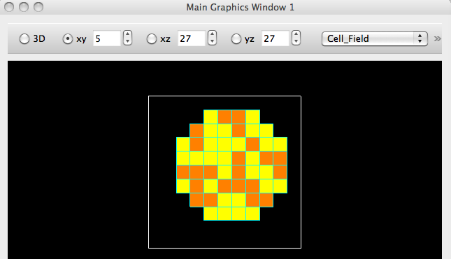
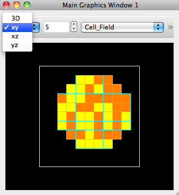

We changed the toolbar widgets at the top of a graphics window, replacing the 3D,xy,xz,yz radio buttons with a combo box selection widget. (The spinbox is disabled for 3D). The main problem with the old toolbar was that if you resized the window to be smaller, the Cell_Field combo box was no longer accessible.
We show the old/original toolbar and the new one:

